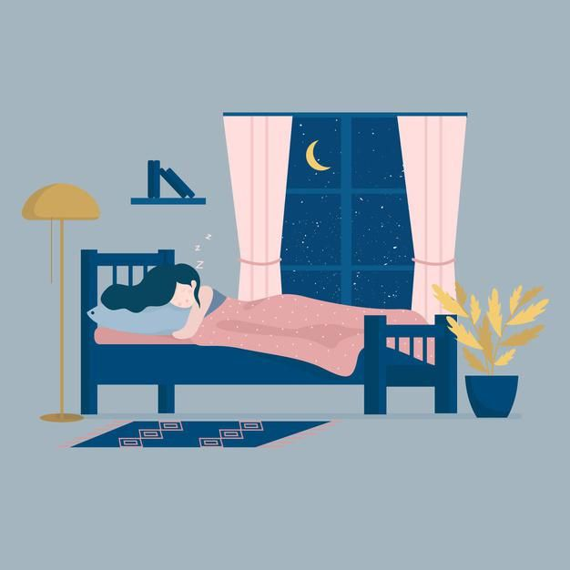

Estágio 1
(NREM - Leve)
Duração: 1 a 7 minutos.
Características: Fase de transição entre a vigília e o sono. A pessoa pode sentir sensação de
queda ou espasmos musculares. Os músculos relaxam, os batimentos cardíacos e a respiração diminuem.
Atividade cerebral: A atividade cerebral começa a diminuir, mas ainda há ondas cerebrais
rápidas e irregulares.